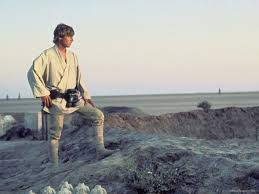
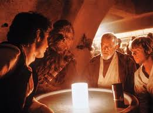
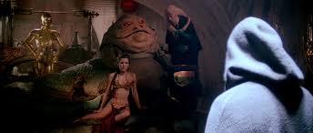
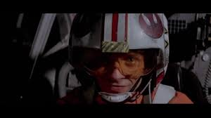
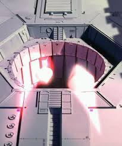
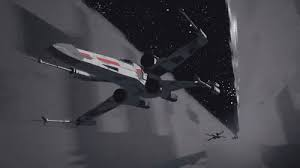
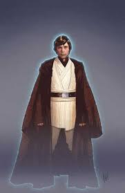
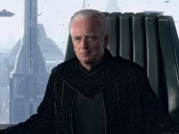
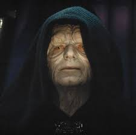

Emperor slain by moisture farmer
Shocking news from the INS today. Our beloved Emperor has been assasinated by a rebel terrorist by the name of Luke Skywalker.

It is currently unknown how this terrorist gained access to the highly secured throne room on the recently declassified, under construction Death Star II®, the IIA is currently investiagting
Boy from nowhere
Little is known about the Emperor's assailant prior to the Battle of Yavin. It is known that he is an orphan, with questionable origins. Before being recruited to the Rebellion through various criminal organizations, he had been placed with a couple he knew as "Beru and Owen Lars", however, the Lars family is currently unavailable for comment.
Criminal Ties
Though much of his early history is unknown, it is known that he has developed ties not only to the Rebellion, but also to known smugglers and criminal elements throughout the Outer Rim
A Bloody History
However unknown he was previously, however, he has shown himself to be a dangerous individual. Sources in the IIA have confirmed that this one-time moisture farmer fired the torpedoes that destroyed the first Death Star®, killing untold numbers of valiant Imperial soldiers. This reporter's heart goes out to the families of these lost heroes.
A Holy War?
Making his rampage even more terrifying, this news outlet has learned that his attacks are not solely political, but motivated by religious zealotry. Skywalker has apparently adopted the outlawed religion know as the "Jedi", a radical holy order, which was once thought eradicated at the end of the Clone Wars.
. 
Goodbye, Our Beloved Leader
Whatever his motivation, his actions have led to the dimming of one of the great stars of unificaction in the galaxy. Gaze once more upon the face of the frail, but wise leader we have lost this day, and weep with us. Try to remember him as he was, the Supreme Chancellor, guardian of peace in a time of struggles.
